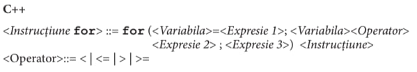
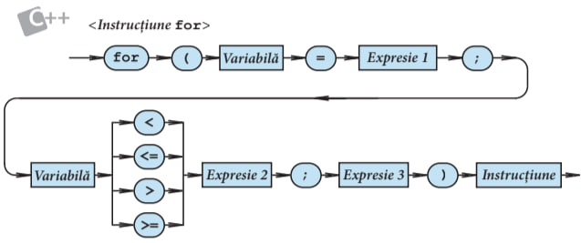
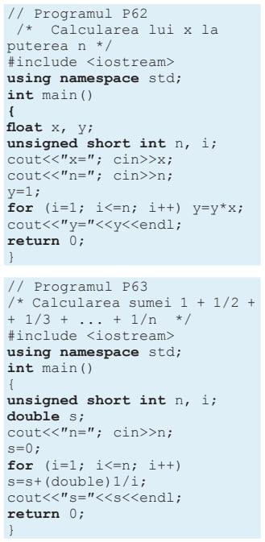

Teorie / Modulul 4
Instrucțiunea For
Instrucţiunea for indică execuţia repetată a unei instrucţiuni în funcţie de valoarea unei variabile de control.
 Variabila situată după cuvântul-cheie for se numește variabilă de control sau contor. Această variabilă trebuie să fie de tip ordinal.
Valorile expresiilor din componența instrucțiunii for trebuie să fie compatibile, în aspectul atribuirii, cu tipul variabilei de control. Expresia 1 indică valoarea inițială, iar Expresia 2 – valoarea finală a variabilei de control.
Instrucțiunea încorporată în ciclul for se execută pentru fiecare valoare din domeniul determinat de valoarea inițială și de valoarea finală.
